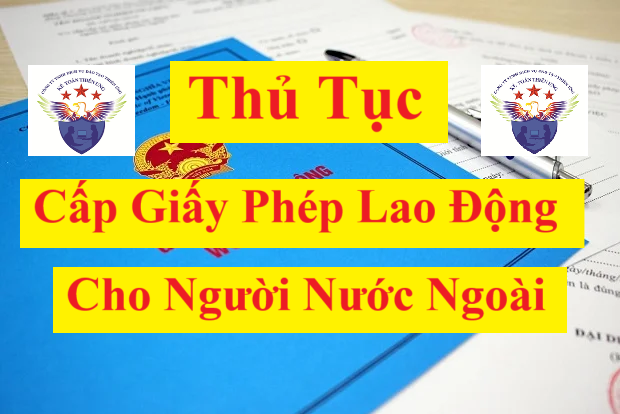

Thủ tục cấp giấy phép lao động cho người lao động nước ngoài làm việc tại Việt Nam mới nhất năm 2025 theo Quyết định 315/QĐ-BNV có hiệu lực từ ngày 04/4/2025
a. Trình tự thực hiện:
- Bước 1: Trước ít nhất 15 ngày, kể từ ngày người lao động nước ngoài dự kiến bắt đầu làm việc tại Việt Nam, người nộp hồ sơ đề nghị cấp giấy phép lao động gửi Bộ Nội vụ (Cục Việc làm).
- Bước 2: Trong thời hạn 05 ngày làm việc, kể từ ngày nhận đủ hồ sơ đề nghị cấp giấy phép lao động, Bộ Nội vụ thực hiện cấp giấy phép lao động cho người lao động nước ngoài theo Mẫu số 12/PLI Phụ lục I ban hành kèm theo Nghị định số 152/2020/NĐ-CP ngày 30/12/2020 của Chính phủ quy định về người lao động nước ngoài làm việc tại Việt Nam và tuyển dụng, quản lý người lao động Việt Nam làm việc cho tổ chức, cá nhân nước ngoài tại Việt Nam (gọi tắt là Nghị định số 152/2020/NĐ-CP). Trường hợp không cấp giấy phép lao động thì có văn bản trả lời và nêu rõ lý do.
Giấy phép lao động có kích thước khổ A4 (21 cm x 29,7 cm), gồm 2 trang: trang 1 có màu xanh; trang 2 có nền màu trắng, hoa văn màu xanh, ở giữa có hình ngôi sao. Giấy phép lao động được mã số như sau: mã số tỉnh, thành phố trực thuộc trung ương và mã số Bộ Nội vụ theo Mẫu số 16/PLI Phụ lục I ban hành kèm theo Nghị định số 70/2023/NĐ-CP; 2 chữ số cuối của năm cấp giấy phép; loại giấy phép (cấp mới ký hiệu 1; gia hạn ký hiệu 2; cấp lại ký hiệu 3); số thứ tự (từ 000.001).
Trường hợp giấy phép lao động là bản điện tử thì phải phù hợp với quy định của pháp luật liên quan và đáp ứng nội dung theo Mẫu số 12/PLI Phụ lục I ban hành kèm theo Nghị định số 152/2020/NĐ-CP.

b. Cách thức thực hiện: Qua dịch vụ bưu chính công ích hoặc trực tuyến hoặc trực tiếp tới Bộ Nội vụ (Cục Việc làm).
c. Thành phần, số lượng hồ sơ:
- Thành phần hồ sơ:
1. Văn bản đề nghị cấp giấy phép lao động theo mẫu số 11/PLI Phụ lục I ban hành kèm theo Nghị định số 152/2020/NĐ-CP.
Các bạn có thể xem và tải Mẫu số 11/PLI Phụ lục I ban hành kèm theo Nghị định số 152/2020/NĐ-CP về tại đây: Mẫu 11/PLI cấp giấy phép lao động cho người nước ngoài
2. Giấy chứng nhận sức khỏe hoặc giấy khám sức khỏe do cơ quan, tổ chức y tế có thẩm quyền của nước ngoài hoặc của Việt Nam cấp có giá trị trong thời hạn 12 tháng, kể từ ngày ký kết luận sức khỏe đến ngày nộp hồ sơ hoặc giấy chứng nhận có đủ sức khoẻ theo quy định của Bộ trưởng Bộ Y tế.
3. Phiếu lý lịch tư pháp hoặc văn bản xác nhận người lao động nước ngoài không phải là người đang trong thời gian chấp hành hình phạt hoặc chưa được xóa án tích hoặc đang trong thời gian bị truy cứu trách nhiệm hình sự của nước ngoài hoặc của Việt Nam cấp.
Phiếu lý lịch tư pháp hoặc văn bản xác nhận người lao động nước ngoài không phải là người đang trong thời gian chấp hành hình phạt hoặc chưa được xóa án tích hoặc đang trong thời gian bị truy cứu trách nhiệm hình sự được cấp không quá 06 tháng, kể từ ngày cấp đến ngày nộp hồ sơ.
4. Văn bản, giấy tờ chứng minh là nhà quản lý, giám đốc điều hành, chuyên gia hoặc lao động kỹ thuật và một số nghề, công việc được quy định như sau:
- Giấy tờ chứng minh là nhà quản lý, giám đốc điều hành bao gồm 3 loại giấy tờ sau:
+ Điều lệ công ty hoặc quy chế hoạt động của cơ quan, tổ chức, doanh nghiệp;
+ Giấy chứng nhận đăng ký doanh nghiệp hoặc giấy chứng nhận thành lập hoặc quyết định thành lập hoặc giấy tờ khác có giá trị pháp lý tương đương;
+ Nghị quyết hoặc Quyết định bổ nhiệm của cơ quan, tổ chức, doanh nghiệp.
- Giấy tờ chứng minh là chuyên gia, lao động kỹ thuật bao gồm 2 loại giấy tờ sau:
+ Văn bằng hoặc chứng chỉ hoặc giấy chứng nhận (trừ trường hợp lao động kỹ thuật quy định tại điểm b khoản 6 Điều 3 của Nghị định số 152/2020/NĐ-CP);
+ Văn bản xác nhận của cơ quan, tổ chức, doanh nghiệp tại nước ngoài về số năm kinh nghiệm của chuyên gia, lao động kỹ thuật hoặc giấy phép lao động đã được cấp hoặc xác nhận không thuộc diện cấp giấy phép lao động đã được cấp.
- Văn bản chứng minh kinh nghiệm của cầu thủ bóng đá nước ngoài hoặc giấy chứng nhận chuyển nhượng quốc tế (ITC) cấp cho cầu thủ bóng đá nước ngoài hoặc văn bản của Liên đoàn Bóng đá Việt Nam xác nhận đăng ký tạm thời hoặc chính thức cho cầu thủ của câu lạc bộ thuộc Liên đoàn bóng đá Việt Nam;
- Giấy phép lái tàu bay do cơ quan có thẩm quyền của Việt Nam cấp hoặc do cơ quan có thẩm quyền của nước ngoài cấp và được cơ quan có thẩm quyền của Việt Nam công nhận đối với phi công nước ngoài hoặc chứng chỉ chuyên môn được phép làm việc trên tàu bay do Bộ Giao thông vận tải cấp cho tiếp viên hàng không;
- Giấy chứng nhận trình độ chuyên môn trong lĩnh vực bảo dưỡng tàu bay do cơ quan có thẩm quyền của Việt Nam cấp hoặc do cơ quan có thẩm quyền của nước ngoài cấp và được cơ quan có thẩm quyền của Việt Nam công nhận đối với người lao động nước ngoài làm công việc bảo dưỡng tàu bay.
- Giấy chứng nhận khả năng chuyên môn hoặc giấy công nhận giấy chứng nhận khả năng chuyên môn do cơ quan có thẩm quyền của Việt Nam cấp cho thuyền viên nước ngoài;
- Giấy công nhận thành tích cao trong lĩnh vực thể thao và được Bộ Văn hóa, Thể thao và Du lịch xác nhận đối với huấn luyện viên thể thao hoặc tối thiểu một trong các bằng cấp như: Bằng B huấn luyện viên bóng đá của Liên đoàn Bóng đá Châu Á (AFC) hoặc bằng huấn luyện viên thủ môn cấp độ 1 của AFC hoặc bằng huấn luyện viên thể lực cấp độ 1 của AFC hoặc bằng huấn luyện viên bóng đá trong nhà (Futsal) cấp độ 1 của AFC hoặc bất kỳ bằng cấp huấn luyện viên tương đương của nước ngoài được AFC công nhận;
- Văn bằng do cơ quan có thẩm quyền cấp đáp ứng quy định về trình độ, trình độ chuẩn theo Luật Giáo dục, Luật Giáo dục đại học, Luật Giáo dục nghề nghiệp và Quy chế tổ chức hoạt động của trung tâm ngoại ngữ, tin học do Bộ trưởng Bộ Giáo dục và Đào tạo ban hành.
5. 02 ảnh mầu (kích thước 4cm x 6cm, phông nền trắng, mặt nhìn thẳng, đầu để trần, không đeo kính màu), ảnh chụp không quá 06 tháng tính đến ngày nộp hồ sơ.
6. Văn bản chấp thuận nhu cầu sử dụng người lao động nước ngoài trừ những trường hợp không phải xác định nhu cầu sử dụng người lao động nước ngoài.
7. Bản sao có chứng thực hộ chiếu hoặc bản sao hộ chiếu có xác nhận của người sử dụng lao động còn giá trị theo quy định của pháp luật.
8. Các giấy tờ liên quan đến người lao động nước ngoài trừ trường hợp người lao động nước ngoài làm việc theo hình thức hợp đồng lao động:
- Đối với người lao động nước ngoài di chuyển nội bộ doanh nghiệp phải có văn bản của doanh nghiệp nước ngoài cử sang làm việc tại hiện diện thương mại của doanh nghiệp nước ngoài đó trên lãnh thổ Việt Nam và văn bản chứng minh người lao động nước ngoài đã được doanh nghiệp nước ngoài đó tuyển dụng trước khi làm việc tại Việt Nam ít nhất 12 tháng liên tục;
- Đối với người lao động nước ngoài vào Việt Nam để thực hiện các loại hợp đồng hoặc thỏa thuận về kinh tế, thương mại, tài chính, ngân hàng, bảo hiểm, khoa học kỹ thuật, văn hóa, thể thao, giáo dục, giáo dục nghề nghiệp và y tế phải có hợp đồng hoặc thỏa thuận ký kết giữa đối tác phía Việt Nam và phía nước ngoài, trong đó phải có thỏa thuận về việc người lao động nước ngoài làm việc tại Việt Nam;
- Đối với người lao động nước ngoài là nhà cung cấp dịch vụ theo hợp đồng phải có hợp đồng cung cấp dịch vụ ký kết giữa đối tác phía Việt Nam và phía nước ngoài và văn bản chứng minh người lao động nước ngoài đã làm việc cho doanh nghiệp nước ngoài không có hiện diện thương mại tại Việt Nam được ít nhất 02 năm;
- Đối với người lao động nước ngoài vào Việt Nam để chào bán dịch vụ phải có văn bản của nhà cung cấp dịch vụ cử người lao động nước ngoài vào Việt Nam để đàm phán cung cấp dịch vụ;
- Đối với người lao động nước ngoài làm việc cho tổ chức phi chính phủ nước ngoài, tổ chức quốc tế tại Việt Nam được phép hoạt động theo quy định của pháp luật Việt Nam phải có văn bản của cơ quan, tổ chức cử người lao động nước ngoài đến làm việc cho tổ chức phi chính phủ nước ngoài, tổ chức quốc tế tại Việt Nam trừ trường hợp người lao động nước ngoài làm việc theo hình thức hợp đồng lao động và giấy phép hoạt động của tổ chức phi chính phủ nước ngoài, tổ chức quốc tế tại Việt Nam theo quy định của pháp luật;
- Đối với người lao động nước ngoài là nhà quản lý, giám đốc điều hành, chuyên gia, lao động kỹ thuật thì phải có văn bản của cơ quan, tổ chức, doanh nghiệp nước ngoài cử người lao động nước ngoài sang làm việc tại Việt Nam và phù hợp với vị trí công việc dự kiến làm việc hoặc giấy tờ chứng minh là nhà quản lý.
9. Hồ sơ đề nghị cấp giấy phép lao động đối với một số trường hợp đặc biệt:
- Đối với người lao động nước ngoài đã được cấp giấy phép lao động, đang còn hiệu lực mà có nhu cầu làm việc cho người sử dụng lao động khác ở cùng vị trí công việc và cùng chức danh công việc ghi trong giấy phép lao động thì hồ sơ đề nghị cấp giấy phép lao động mới gồm: giấy xác nhận của người sử dụng lao động trước đó về việc người lao động hiện đang làm việc, các giấy tờ quy định tại khoản 1, 5, 6, 7, 8 nêu trên và bản sao có chứng thực giấy phép lao động đã được cấp.
- Đối với người lao động nước ngoài đã được cấp giấy phép lao động và đang còn hiệu lực mà thay đổi vị trí công việc hoặc chức danh công việc hoặc hình thức làm việc ghi trong giấy phép lao động theo quy định của pháp luật nhưng không thay đổi người sử dụng lao động thì hồ sơ đề nghị cấp giấy phép lao động mới gồm các giấy tờ quy định tại khoản 1, 4, 5, 6, 7 và 8 nêu trên và giấy phép lao động hoặc bản sao có chứng thực giấy phép lao động đã được cấp.
- Đối với người lao động nước ngoài là chuyên gia, lao động kỹ thuật đã được cấp giấy phép lao động và đã được gia hạn một lần mà có nhu cầu tiếp tục làm việc với cùng vị trí công việc và chức danh công việc ghi trong giấy phép lao động thì hồ sơ đề nghị cấp giấy phép lao động mới gồm các giấy tờ quy định tại khoản 1, 2, 5, 6, 7, 8 nêu trên và bản sao giấy phép lao động đã được cấp.
10. Hợp pháp hóa lãnh sự, chứng thực các giấy tờ:
Các giấy tờ quy định tại các khoản 2, 3, 4, 6 và 8 nêu trên là 01 bản gốc hoặc bản sao có chứng thực, nếu của nước ngoài thì phải được hợp pháp hóa lãnh sự, trừ trường hợp được miễn hợp pháp hóa lãnh sự theo điều ước quốc tế mà nước Cộng hòa xã hội chủ nghĩa Việt Nam và nước ngoài liên quan đều là thành viên hoặc theo nguyên tắc có đi có lại hoặc theo quy định của pháp luật; dịch ra tiếng Việt và công chứng hoặc chứng thực theo quy định của pháp luật Việt Nam.
- Số lượng hồ sơ: 01 bộ.
d. Thời hạn giải quyết: 05 ngày làm việc kể từ ngày nhận đủ hồ sơ hợp lệ theo quy định.
e. Đối tượng thực hiện thủ tục hành chính:
- Tổ chức quốc tế, văn phòng của dự án nước ngoài tại Việt Nam; cơ quan, tổ chức do Chính phủ, Thủ tướng Chính phủ, bộ, ngành cho phép thành lập và hoạt động theo quy định của pháp luật;
- Văn phòng đại diện, chi nhánh của doanh nghiệp, cơ quan, tổ chức do Chính phủ, Thủ tướng Chính phủ, bộ, cơ quan ngang bộ, cơ quan thuộc Chính phủ cho phép thành lập;
- Cơ quan nhà nước, tổ chức chính trị, tổ chức chính trị - xã hội, tổ chức chính trị xã hội - nghề nghiệp, tổ chức xã hội, tổ chức xã hội - nghề nghiệp do Chính phủ, Thủ tướng Chính phủ, bộ, cơ quan ngang bộ, cơ quan thuộc Chính phủ cho phép thành lập;
- Tổ chức sự nghiệp, cơ sở giáo dục do Chính phủ, Thủ tướng Chính phủ, bộ, cơ quan ngang bộ, cơ quan thuộc Chính phủ cho phép thành lập;
- Làm việc cho một người sử dụng lao động tại nhiều tỉnh, thành phố trực thuộc trung ương.
f. Cơ quan giải quyết thủ tục hành chính: Bộ Nội vụ (Cục Việc làm).
g. Kết quả thực hiện thủ tục hành chính: Giấy phép lao động.
h. Phí, lệ phí: Không.
i. Tên mẫu đơn, mẫu tờ khai: Tờ khai đề nghị cấp giấy phép lao động theo mẫu số 11/PLI Phụ lục I ban hành kèm theo Nghị định số 152/2020/NĐ-CP.
k. Yêu cầu, điều kiện thực hiện thủ tục:
- Đủ 18 tuổi trở lên và có năng lực hành vi dân sự đầy đủ;
- Có trình độ chuyên môn, kỹ thuật, tay nghề, kinh nghiệm làm việc; có đủ sức khỏe theo quy định của Bộ trưởng Bộ Y tế;
- Không phải là người đang trong thời gian chấp hành hình phạt hoặc chưa được xoá án tích hoặc đang trong thời gian bị truy cứu trách nhiệm hình sự theo quy định của pháp luật nước ngoài hoặc pháp luật Việt Nam;
- Có văn bản chấp thuận nhu cầu sử dụng người lao động nước ngoài trừ những trường hợp không phải xác định nhu cầu sử dụng người lao động nước ngoài.
- Có trình độ chuyên môn, kỹ thuật, tay nghề, kinh nghiệm làm việc; có đủ sức khỏe theo quy định của Bộ trưởng Bộ Y tế;
- Không phải là người đang trong thời gian chấp hành hình phạt hoặc chưa được xoá án tích hoặc đang trong thời gian bị truy cứu trách nhiệm hình sự theo quy định của pháp luật nước ngoài hoặc pháp luật Việt Nam;
- Có văn bản chấp thuận nhu cầu sử dụng người lao động nước ngoài trừ những trường hợp không phải xác định nhu cầu sử dụng người lao động nước ngoài.
l. Căn cứ pháp lý của thủ tục hành chính:
- Bộ luật Lao động 2019;
- Nghị quyết số 190/2025/QH15 ngày 19/02/2025 của Quốc hội quy định về xử lý một số vấn đề liên quan đến sắp xếp tổ chức bộ máy nhà nước.
- Nghị định số 25/2025/NĐ-CP ngày 21 tháng 02 năm 2025 của Chính phủ quy định chức năng, nhiệm vụ, quyền hạn và cơ cấu tổ chức của Bộ Nội vụ
- Nghị định số 152/2020/NĐ-CP ngày 30 tháng 12 năm 2020 của Chính phủ quy định về người lao động nước ngoài làm việc tại Việt Nam và tuyển dụng, quản lý người lao động Việt Nam làm việc cho tổ chức, cá nhân nước ngoài tại Việt Nam;
- Nghị định số 70/2023/NĐ-CP ngày 18 tháng 9 năm 2023 của Chính phủ sửa đổi, bổ sung một số điều của Nghị định số 152/2020/NĐ-CP ngày 30 tháng 12 năm 2020 của Chính phủ quy định về người lao động nước ngoài làm việc tại Việt Nam và tuyển dụng, quản lý người lao động Việt Nam làm việc cho tổ chức, cá nhân nước ngoài tại Việt Nam.
- Nghị quyết số 190/2025/QH15 ngày 19/02/2025 của Quốc hội quy định về xử lý một số vấn đề liên quan đến sắp xếp tổ chức bộ máy nhà nước.
- Nghị định số 25/2025/NĐ-CP ngày 21 tháng 02 năm 2025 của Chính phủ quy định chức năng, nhiệm vụ, quyền hạn và cơ cấu tổ chức của Bộ Nội vụ
- Nghị định số 152/2020/NĐ-CP ngày 30 tháng 12 năm 2020 của Chính phủ quy định về người lao động nước ngoài làm việc tại Việt Nam và tuyển dụng, quản lý người lao động Việt Nam làm việc cho tổ chức, cá nhân nước ngoài tại Việt Nam;
- Nghị định số 70/2023/NĐ-CP ngày 18 tháng 9 năm 2023 của Chính phủ sửa đổi, bổ sung một số điều của Nghị định số 152/2020/NĐ-CP ngày 30 tháng 12 năm 2020 của Chính phủ quy định về người lao động nước ngoài làm việc tại Việt Nam và tuyển dụng, quản lý người lao động Việt Nam làm việc cho tổ chức, cá nhân nước ngoài tại Việt Nam.
Công ty đào tạo Kế Toán Diệu Tâm mời các bạn tham khảo thêm: